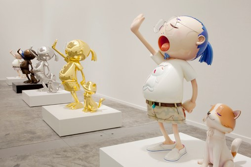
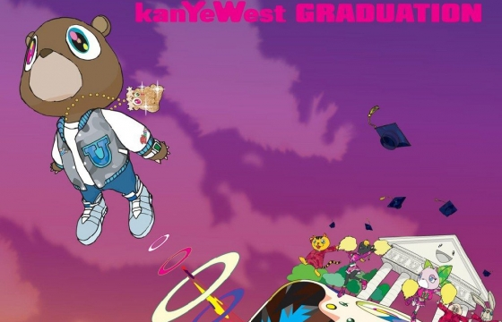
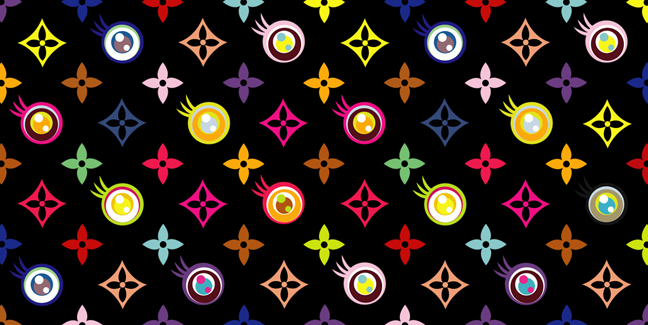
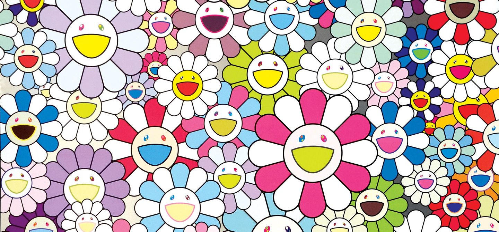

Art by Takashi Murakami
This website was created for the purpose of celebrating and homoring the artistry that is Takashi Murakami. We will be highlighting some of his most famous works and learning more about his life story.

View his most famous sculptures
His sculptures are made of both oil-and-acrylic-fiberglass works feature hypersexualized, cartoonish figures, blown up to larger-than-life scale (they reach around eight and seven feet tall, respectively).

View Album Artwork
Takashi Murakami has designed many album covers for many artists across multiple genres. Maybe you'll see one of your favorite artists in the gallery.
About Takashi Murakami

Born February 1, 1962 (60 years old)
Takashi Murakami was born on February 1, 1962 in Itabashi City, Tokyo, Japan.
He is a Japanese artist and entrepreneur widely recognized for his ability to adapt the aesthetics of Japanese traditional art to operate within the context of popular culture.
Murakami studied Japanese painting at the Tokyo National University of Fine Arts and Music, where he received a Bachelor of Fine Arts degree in 1986 and a Ph.D. in 1993. After completing his studies, he increasingly displayed his works in solo and group exhibitions, making his European debut in 1995 in “TransCulture,” held at the 46th Venice Biennale. The following year Murakami’s paintings and sculptures were featured most notably at the second Asia-Pacific Triennial of Contemporary Art at the Queensland Art Gallery in Brisbane, Australia.
Trained in traditional Japanese art, Murakami saw similarities between the flat composition of Japanese painting and the simplified aesthetics of anime (Japanese animation) and manga (Japanese comics). His style, which emphasized two-dimensional forms and bold, striking imagery, gave birth to an artistic movement known as Superflat, which not only acknowledged but glorified the interaction between the commercial and art worlds. After curating an exhibition in 2002 at the Cartier Foundation for Contemporary Art in Paris, Murakami collaborated in 2003 with Marc Jacobs, artistic director of the Louis Vuitton fashion house, to produce fashion accessories. He earned celebrity status in May 2003 when his Miss Ko2 (pronounced “ko ko”)—a life-size fibreglass sculpture of a large-breasted blonde waitress in a petite uniform—was auctioned in New York City for $567,500; the price set what was then a record for a work by a contemporary Japanese artist.
By 2005 Murakami had been dubbed the Japanese Andy Warhol and had reached a new level of success in his career as artist, curator, product designer, theorist, and entrepreneur. At the Japan Society Gallery in New York City, he curated the exhibition “Little Boy: The Arts of Japan’s Exploding Subculture.” Featuring the work of young Japanese artists, the show examined the otaku (“geek”) movement propelling anime and manga—two industries at the heart of Japanese popular culture. Also in 2005 Murakami displayed his monumental sculpture Tongari-Kun—Mr. Pointy & the Four Guards in Tokyo’s fashionable Roppongi Hills development. This colourful, meticulously crafted work, modeled on a Buddha statue, was the fourth edition of a piece that had charmed many viewers outside Rockefeller Center, New York City, in 2003.
Murakami is recognized today as one of the most visible and important Japanese artists working today, he is known for disseminating and promoting pop art strategies in ways unforeseen by American critics and artists.
Artwork

Eye Love Superflat
2003, Abstract Art

Flowers
2002, Abstract Art

727
1996, Abstract Art